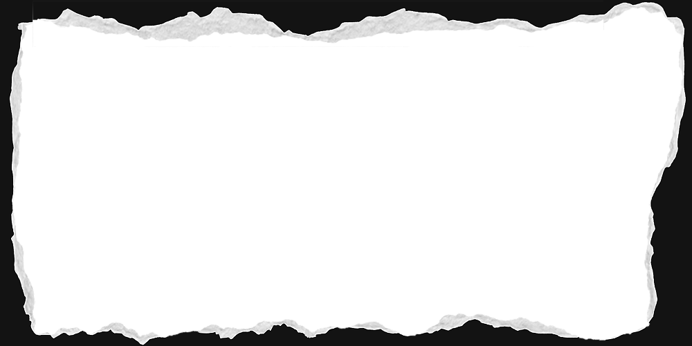
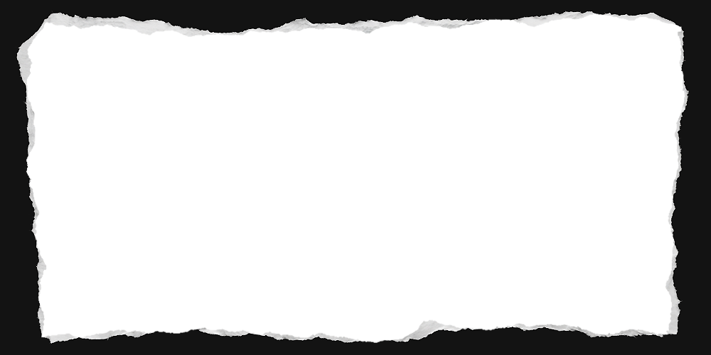
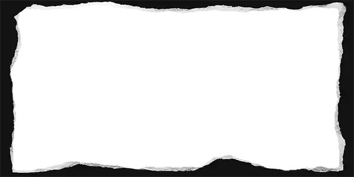

Fuera del mapa: la cultura que se sostiene sin fondos ni foco
Recorrimos centros comunitarios en cinco regiones para entender cómo se programa, se financia y se cuida la cultura lejos de Santiago.
por Ricardo González

Recorrimos centros comunitarios en cinco regiones para entender cómo se programa, se financia y se cuida la cultura lejos de Santiago.
 Video
Video
Cumbia, cueca y cocina compartida: crónica de los espacios donde la comunidad se encuentra cuando cae el sol.

Permisos, colectivos y municipios: cómo se negocia (y se borra) el muralismo en las ciudades.
 Audio
Audio
Una archivista sobre qué se guarda, qué se pierde y quién decide la memoria de una ciudad.

Una compañía de Valparaíso que monta obras con presupuesto cero y salas llenas.
 Audio
Audio
Tres sellos independientes conversan sobre algoritmos, vinilos y públicos fieles.
 Video
Video
Arpilleras, hilos y memoria: un recorrido visual por talleres de bordado del sur.


Una ilustradora sobre autoría, encargos y el valor del trazo propio en tiempos de imágenes generadas.


Barrios, hinchadas y memoria: por qué la política cultural sigue mirando hacia otro lado.


Plazos, montos y nuevas líneas de financiamiento, explicados en simple.
 Audio
Audio
Obras, escenas y proyectos emergentes fuera del circuito de siempre.
Obras, conciertos, muestras y funciones que nos parecen valiosas, en todo Chile y para todos los bolsillos.


Usamos cookies propias y de analítica para saber qué se lee y mejorar el sitio. Política de privacidad.